Generated by scripts/render-details.mjs from src/components/details/penPath.ts, and since v4.9 doodlePath.ts, framePath.ts and numeralPath.ts. Each image is 3x, shown at 1x here; open the PNG for 1:1 device pixels. sheet@3x.png holds all of them.
| stories-rule Home: under the stories, 358pt (16 to 374); since v4.9 the upper stroke of its double rule, below box 360 x 4 pt · ink 0.4 to 1.1 pt | |
| section-head-rule Dex: under a section head, 342pt (24 to 366) box 344 x 5 pt · ink 0.4 to 1.1 pt | |
| entry-rule Home (retired in v4.9): the 24pt rule closing each feed post, now the post's foot box 26 x 3 pt · ink 0.4 to 1.1 pt | |
| swash Tab-root title: 56pt at text scale 1 box 58 x 6 pt · ink 0.4 to 1.25 pt | |
| swash-1.3 Tab-root title at the 1.3 cap: 72.8pt, same weight box 75 x 6 pt · ink 0.4 to 1.25 pt | |
| margin-rule Drink page: the record's margin rule, 160pt here (it measures itself) box 6 x 162 pt · ink 0.4 to 1.1 pt | |
| column-rule Drink page: the facts column rule, 52pt here box 3 x 54 pt · ink 0.4 to 1.1 pt | |
| profile-margin Profile (retired in v4.7): beside the two ledger rows, 53.5pt at text scale 1 box 4 x 56 pt · ink 0.4 to 1.1 pt | |
| board-rule Tournaments tab: between tournaments and Friends, 342pt (24 to 366) box 344 x 4 pt · ink 0.4 to 1.1 pt | |
| activity-end-rule Activity (retired in v4.9): the 24pt closing rule at the list's foot, now its signed end box 26 x 3 pt · ink 0.4 to 1.1 pt | |
| plate-drip Drink page: the drip off a caught 62 x 24 Nº plate (plate drawn in Campari) box 6 x 12 pt · ink 0.8 to 3.4 pt | |
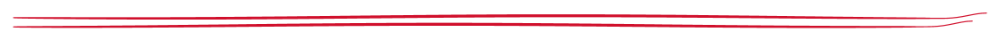 | double-rule-stories Home: the stories rule doubled, 358pt, seed 0 (Pen's mock) over seed 3 box 360 x 7 pt · ink 0.4 to 1.1 pt |
| double-rule-board Tournaments: the board rule doubled, 342pt box 344 x 8 pt · ink 0.4 to 1.1 pt | |
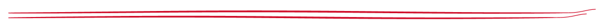 | double-rule-spec Drink page: the spec card's head, 342pt box 344 x 9 pt · ink 0.4 to 1.1 pt |
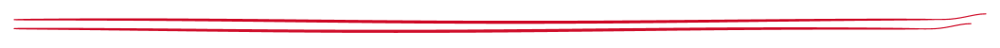 | double-rule-rest-head Dex: the "Everything else" head, 342pt box 344 x 9 pt · ink 0.4 to 1.1 pt |
| post-corner-tr Home: a post's top-right corner, 15pt arms, at { top: 3, right: 8 } box 18 x 18 pt · ink 0.45 to 1.45 pt | |
| post-foot Home: a post's foot, the corner and the closing rule as one stroke, 32 x 15 box 35 x 18 pt · ink 0.4 to 1.42 pt | |
| post-corner-bl The post page: its bottom-left corner alone (it has no closing rule) box 18 x 18 pt · ink 0.45 to 1.45 pt | |
| crop-corners An empty state's print, 120 x 150: the anti-diagonal pair, 6pt off it box 136 x 166 pt · ink 0.45 to 1.45 pt | |
| doodle-lime The lime, at 1.5 (beside a print), unturned box 61 x 59 pt · ink 0.4 to 2.1 pt | |
| doodle-twist The twist, at 1.5 (beside a print), unturned box 36 x 54 pt · ink 0.4 to 2.1 pt | |
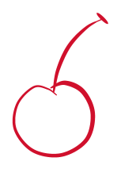 | doodle-cherry The cherry, at 1.5 (beside a print), unturned box 43 x 63 pt · ink 0.4 to 2.1 pt |
| doodle-olive The olive, at 1.5 (beside a print), unturned box 74 x 74 pt · ink 0.4 to 2.1 pt | |
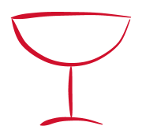 | doodle-coupe The coupe, at 1.5 (beside a print), unturned box 52 x 50 pt · ink 0.4 to 2.1 pt |
| doodle-shaker The shaker, at 1.5 (beside a print), unturned box 29 x 68 pt · ink 0.4 to 2.1 pt | |
| crown Tournaments: the leader's crown on a 40pt face, 8 degrees box 22 x 15 pt · ink 0.4 to 2.1 pt | |
| crown-0.8 A tournament's page: the crown on a live leader's 32pt face box 18 x 13 pt · ink 0.4 to 2.09 pt | |
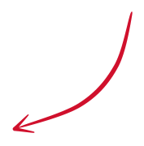 | arrow Home and the Dex empty: the arrow from beside the body to the key, 14pt clear box 51 x 52 pt · ink 0.45 to 1.85 pt |
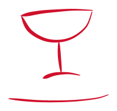 | sign-coupe A list's end, signed: the coupe at 1.2, -4 degrees, and the swash box 58 x 55 pt · ink 0.4 to 2.1 pt |
| sign-lime A list's end, signed: the lime at 1.2, -8 degrees, and the swash box 58 x 62 pt · ink 0.4 to 2.1 pt | |
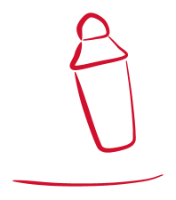 | sign-shaker A list's end, signed: the shaker at 1.2, -12 degrees, and the swash box 58 x 67 pt · ink 0.4 to 2.1 pt |
| sign-olive A list's end, signed: the olive at 1.2, -4 degrees, and the swash box 66 x 76 pt · ink 0.4 to 2.1 pt | |
| sign-twist A list's end, signed: the twist at 1.2, -6 degrees, and the swash box 58 x 61 pt · ink 0.4 to 2.1 pt | |
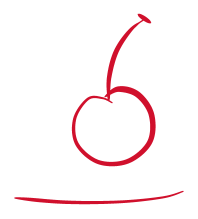 | sign-cherry A list's end, signed: the cherry at 1.2, -10 degrees, and the swash box 58 x 65 pt · ink 0.4 to 2.1 pt |
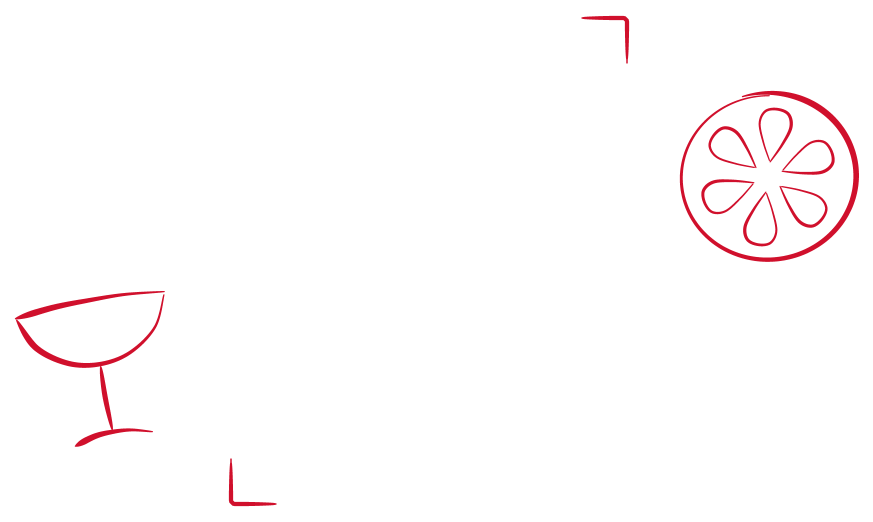 | cluster-coupe-art An empty state round a print: the coupe's cluster and the corners, one path box 283 x 166 pt · ink 0.4 to 2.1 pt |
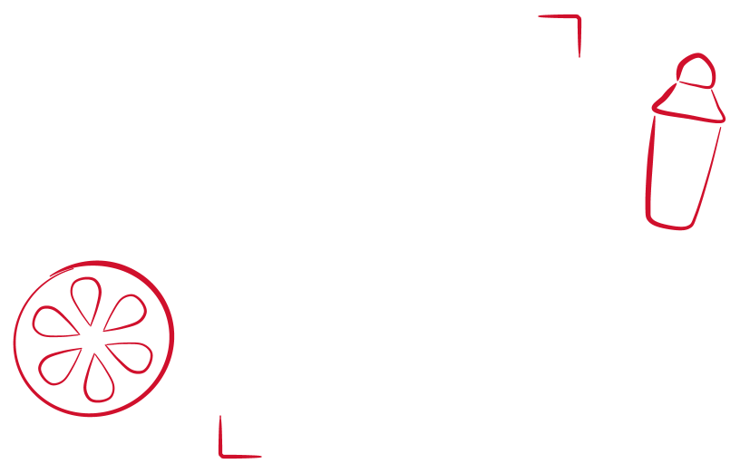 | cluster-lime-art An empty state round a print: the lime's cluster and the corners, one path box 264 x 166 pt · ink 0.4 to 2.1 pt |
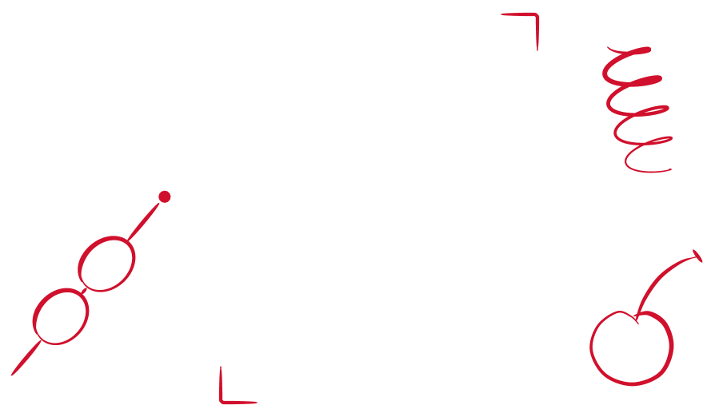 | cluster-olive-art An empty state round a print: the olive's cluster and the corners, one path box 290 x 166 pt · ink 0.4 to 2.1 pt |
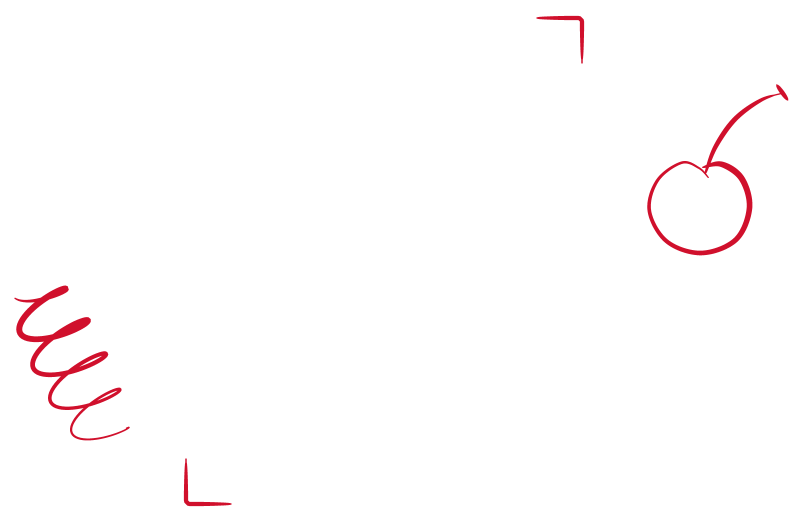 | cluster-twist-art An empty state round a print: the twist's cluster and the corners, one path box 260 x 166 pt · ink 0.4 to 2.1 pt |
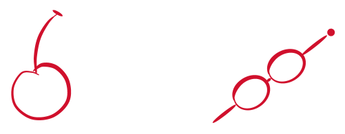 | cluster-cherry-icon An empty state over a glyph: the cherry's cluster, one path box 159 x 57 pt · ink 0.4 to 2.1 pt |
| cluster-shaker-icon An empty state over a glyph: the shaker's cluster, one path box 152 x 56 pt · ink 0.4 to 2.1 pt | |
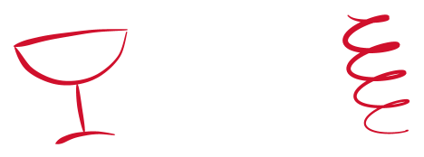 | cluster-coupe-icon An empty state over a glyph: the coupe's cluster, one path box 148 x 50 pt · ink 0.4 to 2.1 pt |
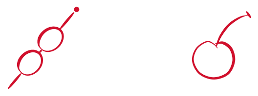 | cluster-olive-icon An empty state over a glyph: the olive's cluster, one path box 168 x 58 pt · ink 0.4 to 2.1 pt |
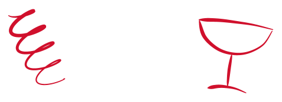 | cluster-twist-icon An empty state over a glyph: the twist's cluster, one path box 151 x 50 pt · ink 0.4 to 2.1 pt |
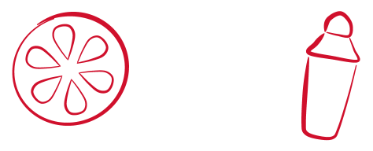 | cluster-lime-icon An empty state over a glyph: the lime's cluster, one path box 150 x 56 pt · ink 0.4 to 2.1 pt |
| figure-01 Dex: a section figure, cap 48, in rule (the press, Anton since v4.10) box 45 x 52 pt · the press | |
| figure-no-0100 Drink page: the spec card's figure, cap 48, in rule (the press, Anton since v4.10) box 157 x 52 pt · the press | |
| leader Drink page: a menu leader, 120pt, in lineControl (the press) box 120 x 3 pt · the press | |
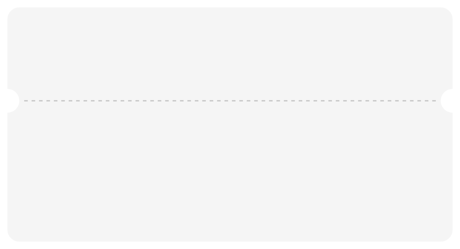 | ticket Tournaments: a ticket card, 300 x 158, notches r 8 at 63, its perforation in rule (the press on the wash) box 280 x 2 pt · the press |